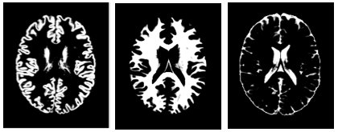
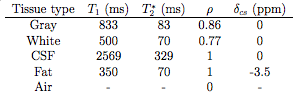
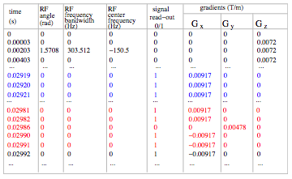
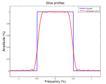
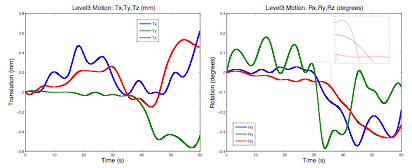
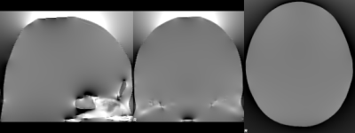
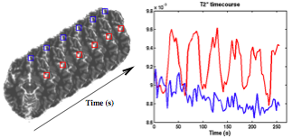

The input object is a 4D volume where the fourth dimension is a tissue-type. The object can be a segmented anatomical voxel model from any source (with ideally voxel sizes of 1x1x1mm). For example, if the object is a brain, then a segmented anatomical voxel model would be a collection of tissue templates: three-dimensional anatomical images of distinct tissue types (e.g. one template of grey matter, another of white matter and a third of cerebro-spinal fluid (CSF)). The image on the right shows cross-sections of the tissue templates derived from the anatomical images of grey matter, white matter and CSF (ordered from left to right). The voxel values in these templates reflect the proportion of tissue present in that voxel, in the range [0,1].
An excellent input object is provided with POSSUM ($FSLDIR/data/possum/brain.nii.gz). This is the BrainWeb digital brain phantom kindly provided by Alan Evans, Louis Collins et. al, McConnell Brain Imaging Centre, Montreal Neurological Institute, McGill University.
Alternatively, you can supply your own input object. The most common way to do this is to use a segmented T1 weighted structural image of the subject's brain (desirably 1x1x1mm size voxels). Each segmentation volume can then be used as a tissue class. By merging them together, the required 4D digital phantom is obtained. An example of how this process might look is:
bet structural structural_brain -f 0.5 -g 0
fast -t1 -c 3 -os -ob -od structural_brain struct_brain
fslmerge -t brain structural_brain_seg_1 structural_brain_seg_2 structural_brain_seg_0
Important note: The order of tissue types in the 4D object volume needs to match the order of MR parameters for different tissues in the MR parameters matrix. An example shown above places tissues in the order: grey, white, CSF. This matches the MR parameters matrix below: grey (first row), white (second row), CSF (third row).
The MR parameters (relaxation times T1, T2*, spin density &rho, and chemical shift value &delta) are specified using an ASCII matrix. Some example matrices (for 1.5T and 3T scanners) with a set of parameter values for each of the tissue types are given with POSSUM: $FSLDIR/data/possum/MRpar_1.5T and $FSLDIR/data/possum/MRpar_3T. The values used in these example matrices were derived by McConnell Brain Imaging Centre and FMRIB centre respectively.
You can specify your own MR parameters matrix. You can make it either using MATLAB or emacs or any other text editor. The matrix should contain only numbers and should have 4 columns and be of the same format as in the image above. The units also need to be as the one specified in the image above. It should have as many rows as there are tissue types. Use the POSSUM example matrices to get a feeling of how this matrix should look like.
Important note: The order of tissue types in the 4D object volume needs to match the order of MR parameters for different tissues in the MR parameters matrix. An example shown in the Object section places tissues in the order: grey, white, CSF. This matches the MR parameters matrix shown in the image above: grey (first row), white (second row), CSF (third row).
 The pulse sequence is in a matrix form and defines RF angle, RF frequency bandwidth, RF center frequency, read-out times, and gradient waveforms (as seen in the image on the right). The best way to generate the pulse sequence is within the POSSUM GUI. All the pulse sequence parameters can be specified there. Default values are given to make things easier for you. There are six files POSSUM expects to find: pulse, pulse.info, pulse.readme, pulse.posx, pulse.posy, pulse.posz. All of these files are automatically generated by the GUI:
If you want to generate a pulse sequence using a command-line and not the POSSUM GUI (not recommended) use the command-line pulse:
pulse
pulse -i object -o pulse [options]
Compulsory arguments (You MUST set one or more of):
-i,--inp 4D brain, resolution can be any.
-o,--out output name for the pulse sequence matrix
Optional arguments (You may optionally specify one or more of):
--seq default=epi (epi OR ge OR none)
--angle default=90 (flip angle in degrees)
--te default=0.03s (echo time TE)
--tr default=3s (repetition time TR)
--trslc default=0.12s (the time that takes for the acquisition of one slice)
--nx default=64 (resolution in x of the output image)
--ny default=64 (resolution in y of the output image)
--dx default=0.004m (image voxel x-dimension)
--dy default=0.004m (image voxel y-dimension)
--maxG default=0.055 T/m (maximum gradient strength)
--riset default=0.00022s (time it takes for the gradient to reach its max value)
--bw default=100000Hz (receiving bandwidth)
--numvol default=1 (number of volumes)
--numslc default=1 (number of slices)
--slcthk default=0.006m (slice thickness)
--gap default=0m (gap between the slices in m)
--zstart default=0m (the lowest position in the slice direction in m)
--slcdir default=z- (x+,x-, y+,y- or z+,or z- slice direction/orientation)
--phasedir default=y (x,y,or z phase encode direction)
--readdir default=x (x,y, or z read encode direction)
-v,--verbose switch on diagnostic messages
-h,--help display this message
-k,--kcoord default=no (saving k-space coordinates)
Slice profile is a property of RF pulses. It describes the shape of the RF pulse in the frequency space. The shape is important as it defines the "amount" of excitation for the spins precessing at different frequencies. Ideally, this shape should be rectangular (blue line in the image). However that is never the case as the RF pulses are not infinite, and a realistic profile looks more like the red line.
An example of the slice profile is given with POSSUM: $FSLDIR/data/possum/slcprof. This slice profile was derived from the Varian 3T scanner in FMRIB. The file slcprof is given as a 2-column ASCII matrix. The first column is the frequency and the second are the amplitude values which modify the RF flip angle. Both are normalised.
You can make your own slice profile. It is scanner dependent so you can ask your radiologist to help you make it. Once you make one, you can use it for all your simulations. Alternatively you can always use the one provided with the POSSUM.
 The input motion sequence is defined in the simulator by an input file which specifies: time (s), Tx, Ty, Tz (characterising translations - in metres), Rx, Ry, Rz (characterising rotations about the center of the volume - in radians). Each of these parameters is one column of the 7 column ASCII matrix. The rotations are specified using rotation angles often called pitch (rotation about the x-axis), roll (rotation about the y-axis) and yaw (rotation about the z-axis). All rotations are assumed to happen using the right hand rule, and in the order pitch-roll-yaw.
A few examples of the motion matrix are given with POSSUM:
$FSLDIR/data/possum/motionAllLarge_60s (shown in the image),
$FSLDIR/data/possum/motionInPlaneLarge_12s,
$FSLDIR/data/possum/motionRzLarge_0.12s,
$FSLDIR/data/possum/motionRzMed_60s.
You can easily make your motion file using either MATLAB or Emacs or any other editor. Note that the motion parameters can be specified at any time point. All you need to do is to specify the time in the first column. The motion values in between the two time points will be automatically interpolated within the POSSUM program.
Another way of making your own motion file is by using mcflirt to extract the file from your subject's FMRI data set. You should take into account that POSSUM motion file and mcflirt motion file are different regarding a few things: 1) .par file that mcflirt outputs is in reversed order to the possum motion file (first rotations and then translations); 2) mcflirt file does not have the time-column which you will need to add yourself (motion specified at each TR); 3) translation units of .par files are in millimeters and translation units of POSSUM files are in meters; 4) center of rotations for the mcflirt motion file is in the bottom left corner of the object and for the POSSUM motion file is in the center of the object. All of these changes can easily be done in MATLAB (the conversion scripts will be part of the next FSL release).
Important note: The time length of the motion file (the time specified-in the last row of the matrix) should not exceed the time length of the pulse sequence (TR*NumVolumes).
 B0 inhomogeneities occur at interfaces of materials with different magnetic susceptibilities, such as tissue-air interfaces. These differences lead to distortion in the local magnetic field, as Maxwell’s equations need to be satisfied (an example of the distorted field is shown in the image on the right).
No motion case
In POSSUM, when there is no motion, only one 3D image representing B0 inhomogeneities is needed (in Tesla or ppm). An example of this image is given with POSSUM. It is the first volume of the 4D volume $FSLDIR/data/possum/b0_ppm.nii.gz. Note that in the GUI you can either specify a 4D volume in which case the first volume will only be used, or you can just specify directly your 3D volume. The B0 inhomogeneity volume provided with POSSUM was made from the original CT map of the same subject as the POSSUM example object ( $FSLDIR/data/possum/brain.nii.gz). The values are in parts-per-million (ppm).
If you would like to make your own B0 inhomogeneity file, you can do it in two ways. The first way is if you have a good tissue/air segmentation, a 3D image with ones where there is tissue and zeros where there is air (the best one you can get is from a CT map). Once you have a tissue/air segmentation volume, you can run the command-line program b0calc:
b0calc -i tis_air_seg -o b0
The output volume of this program is in Teslas, and is generated for a field strength of 1T. In order to obtain B0 inhomogeneity file for any other magnetic field strength, just multiply the output of the b0calc with the desired field strength (e.g. with 3 if you need B0 inhomogeneities for the magnetic field of 3T). More information about the b0calc is set out below.
If you don't have a tissue/air segmented volume, you can use a field_map (2 complex images acquired with different echo times TE) and a structural image. These two images need to be of the same dimension and voxel size - the best is 1x1x1mm (if this is not the case you might need to register them). Then run the script:
generate_b0 structural field_map TEdiff
TEdiff is the difference between the two TE times. This script will generate the b0 inhomogeneities map for you. Always view the image before using it in the GUI to make sure it looks ok.
Motion case
If there is motion, POSSUM GUI requires the whole basis set consisting of nine 3D images: three (x-, y-, and z- projection) for each of the three main orientations of the B0 field (x-, y-, z- direction). An example of the B0 inhomogeneity basis set is given with POSSUM: $FSLDIR/data/possum/b0_ppm.nii.gz. This file is a 4D volume and each of the nine volumes represents one projection of one of the three basis vectors. This basis set was made from the original CT map of the same subject as the POSSUM example object ( $FSLDIR/data/possum/brain.nii.gz). The values in this basis set are in parts-per-million (ppm).
In order to calculate your own basis set you need to have a good tissue/air segmentation, a 3D image with ones where there is tissue and zeros where there is air (the best one is from a CT map). If you don't have one, you will have to improvise and possibly use the field_map to derive the air/tissue segmentation image. Once you have a tissue/air segmentation volume, run the following:
b0calc -i tis_air_seg -o b0x --b0x=1 --b0y=0 --b0=0 --xyz
b0calc -i tis_air_seg -o b0y --b0x=0 --b0y=1 --b0=0 --xyz
b0calc -i tis_air_seg -o b0z --b0x=0 --b0y=0 --b0=1 --xyz
The output of these command-lines will be nine volumes (values in Teslas). Once you generate them (note that it can take a few hours!) merge them into one 4D file. The order of the files needs to be as in the following example:
fslmerge -t b0 b0z_dz b0z_dy b0z_dx b0y_dz b0y_dy b0y_dx b0x_dz b0x_dy b0x_dx
as that is what the POSSUM GUI will expect to find. The basis set generated in this way is for the 1T magnetic field. In order to generate the basis set for any other magnetic field strength just multiply the whole 4D volume with the desired field strength.
The details of the command line program b0calc are:
b0calc
b0calc -i input -o output [options]
Compulsory arguments (You MUST set one or more of):
-i,--in filename of input image
-o,--out filename of B0 inhomogeneity output volume
Optional arguments (You may optionally specify one or more of):
--gx Value for zeroth-order x-gradient field (per mm): default=0
--gy Value for zeroth-order y-gradient field (per mm): default=0
--gz Value for zeroth-order z-gradient field (per mm): default=0
--b0x Value for zeroth-order b0 field (x-component): default=0
--b0y Value for zeroth-order b0 field (y-component): default=0
--b0 Value for zeroth-order b0 field (z-component): default=1
-d Delta value (chi_tissue - chi_air): default=-9.45e-6
--chi0 Value for susceptibility of air: default=+4e-7
--xyz calculate and save all 3 field components (i.e. x,y,z)
--extendboundary Relative proportion to extend voxels at boundary: default=1
--directconv use direct (image space) convolution, not FFT
-v,--verbose switch on diagnostic messages
-h,--help display this message
Activation (BOLD signal) is defined in the simulator through the changes in the T2*. Each object voxel has its own time-series of T2* changes. These are user-defined and packed into massive four-dimensional volumes often called T2* maps. Instead of the 4D volumes it is also possible to define T2* maps with a 3D T2* map and an extra file providing the scaling parameter together with the time-points when the scaling parameter is applied.
An example of the 3D T2* map and a modulation time course are provided with POSSUM ($FSLDIR/data/possum/activation3D.nii.gz and $FSLDIR/data/possum/activation3Dtimecourse). They were derived by fitting the equation S = S0 exp(-TE/T2* ) to an experimentally acquired FMRI data set (from Montreal Neurological Institute, McGill University), where S is the measured signal intensity, TE is the echo time and S0 is the baseline intensity (determined from the average value of S under baseline conditions). The experiment that the data was generated from involved auditory naming with the paradigm consisting of six blocks ‘on’, and six blocks ‘off’. During ‘on’ blocks, subjects heard a description of an object and had to think of the name of the object.
You can make your own files by drawing areas of interest in fslview and then creating a modulation time-course file which matches your experimental paradigm. Another way of making the files is by using the already existing FMRI data to extract the T2* map as described above.